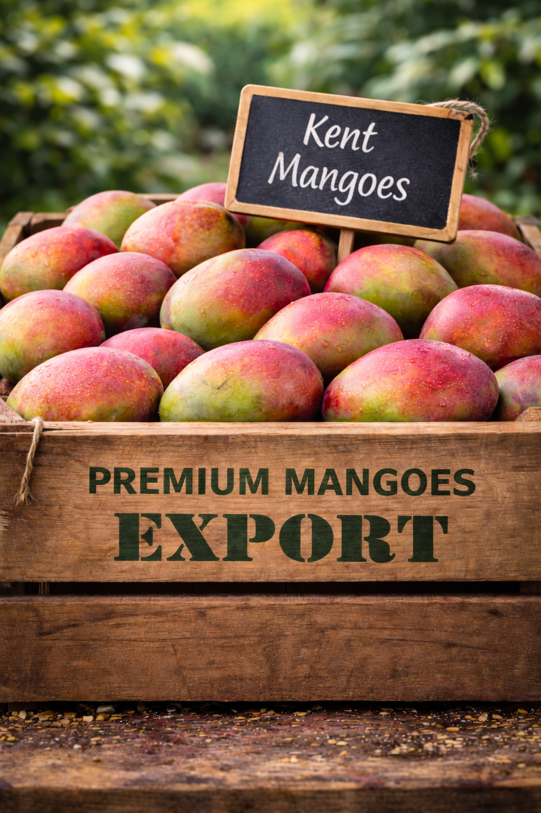
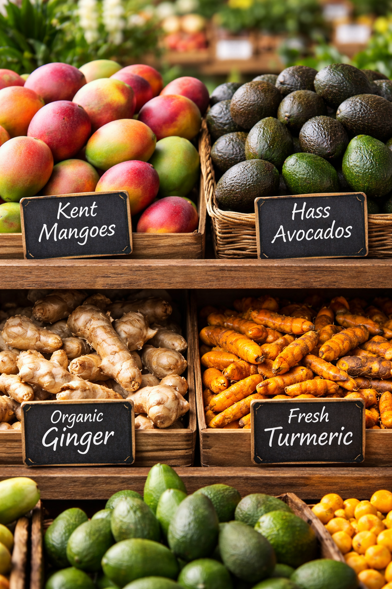
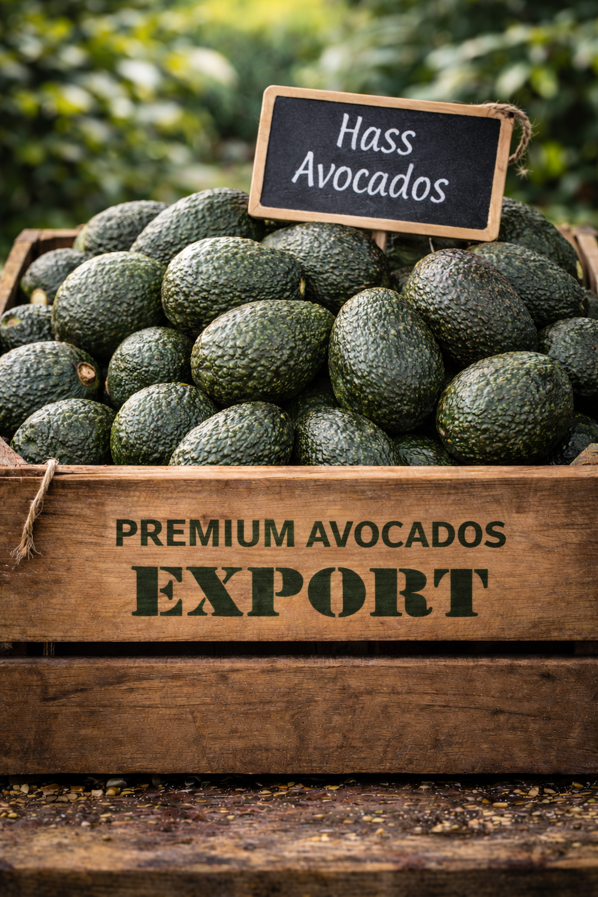
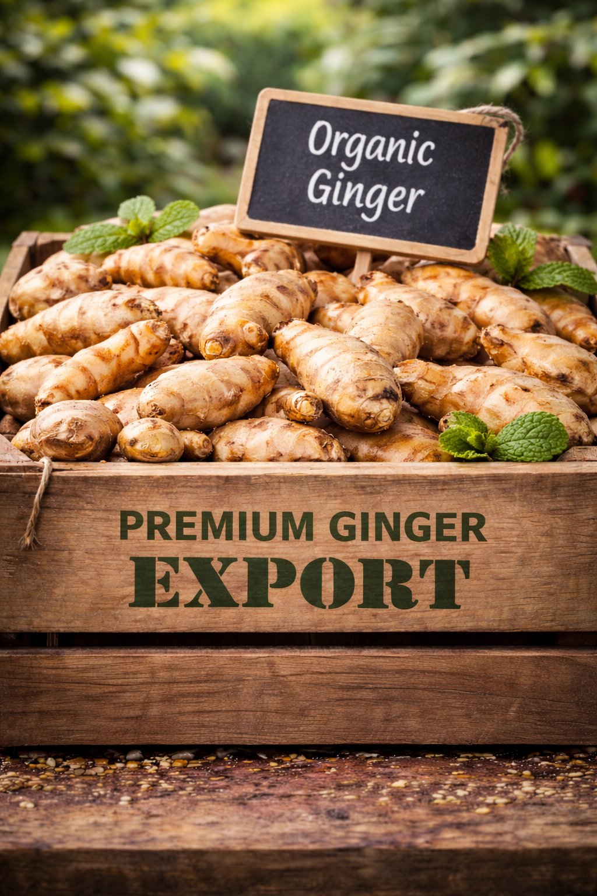
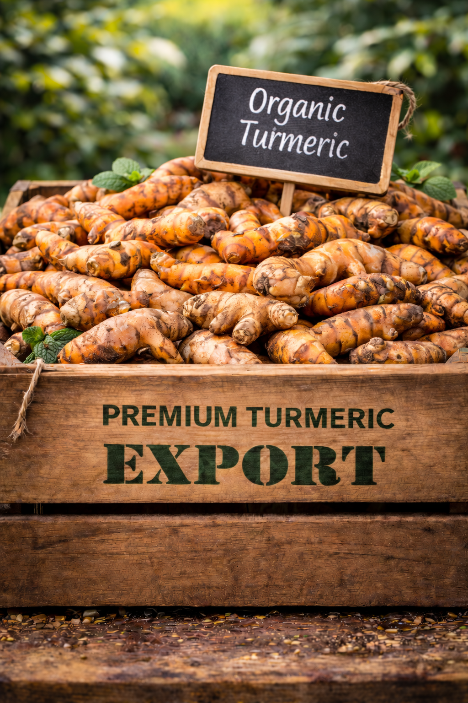

Kent Mango
Export-oriented sourcing from Peru with a commercial focus on quality, presentation, and timing.
Andevara Produce brings together export experience, trusted grower relationships, and commercial coordination for buyers seeking Kent mango, Hass avocado, organic ginger, and organic turmeric from Peru.
Andevara Produce is built on real export experience, practical origin knowledge, and a clear understanding of what international buyers expect from a sourcing partner.

Fardi Gil is a Peruvian fresh produce export professional with more than 12 years of experience in international trade, specializing in mango, Hass avocado, organic ginger, and organic turmeric for global markets including North America, Europe, and Asia.
Throughout his career, he has worked closely with growers, packing facilities, logistics providers, and international buyers, gaining a comprehensive understanding of the fresh produce supply chain—from origin sourcing and post-harvest handling to cold chain logistics and export coordination.
Through Andevara Produce, he now focuses on connecting trusted Peruvian supply with importers seeking reliability, transparency, and long-term commercial partnerships.
His approach combines origin knowledge, export experience, and a clear understanding of buyer expectations to support professional, dependable B2B relationships.
We combine origin knowledge, export experience, and professional communication to support buyers looking for reliable long-term partners in Peru.
Direct understanding of Peruvian sourcing, packing, logistics, and export documentation.
Strong connection to origin and a practical understanding of product flow and quality expectations.
Professional communication that reflects the needs of importers, distributors, and retail supply teams.
Commitment to traceability, transparency, and consistent follow-through across the supply process.
Partnership-driven approach designed to build trust over time, not just close one transaction.
Our focus is on commercially relevant Peruvian products supported by trusted origin relationships and clear coordination for international buyers.

Export-oriented sourcing from Peru with a commercial focus on quality, presentation, and timing.

Reliable supply coordination for buyers looking for dependable product flow and market-oriented support.

Peruvian organic ginger sourced with a focus on trusted origin, export readiness, and buyer communication.

Premium Peruvian turmeric positioned for partners who value quality, transparency, and long-term supply discussions.
Andevara Produce is positioned as a sourcing and brokerage partner that helps bridge origin capabilities in Peru with buyer expectations in North America.
Support in connecting buyers with trusted Peruvian supply aligned with product category, timing, and commercial expectations.
Practical understanding of packing, logistics, shipping flow, and export processes that help keep communication clear.
Professional communication shaped by real export experience and aligned with importer and distributor needs.
A partnership mindset focused on reliability, transparency, and consistent follow-through over time.
Beyond brokerage positioning, Andevara Produce is supported by hands-on experience across products, markets, and operational coordination.
Experience supporting international business across North America, Europe, and Asia.
Commercial background in Kent mango, Hass avocado, organic ginger, and organic turmeric.
Knowledge of growers, packing operations, cold chain, logistics, and export documentation.
Based in Canada with practical Peru origin knowledge to support buyer-oriented conversations.
Seasonal visibility helps buyers plan sourcing programs with greater clarity and better coordination.
Main season: November to March
Ideal for buyers planning winter sourcing programs from Peru.
Main season: April to September
Supports spring and summer programs with strong Peruvian market relevance.
Main season: July to January
Supply can vary by origin area and program planning, making coordination especially important.
Main season: July to January
Ideal for buyers seeking differentiated Peruvian origin with direct commercial coordination.
Our network is built around trusted growers, packing operations, and export coordination that support international buyers with reliability and transparency.
Andevara Produce works closely with experienced growers, packing operations, and logistics partners in Peru to help support quality expectations, communication, and reliable coordination for international buyers.
Rather than presenting ourselves as a generic trader, we position the business as a sourcing and brokerage partner that understands both origin realities and buyer standards.

If you are an importer or distributor interested in Peruvian produce, Andevara Produce would be glad to start a conversation.